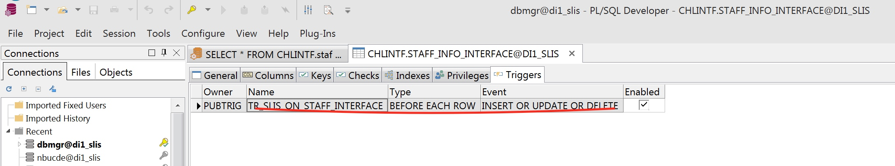
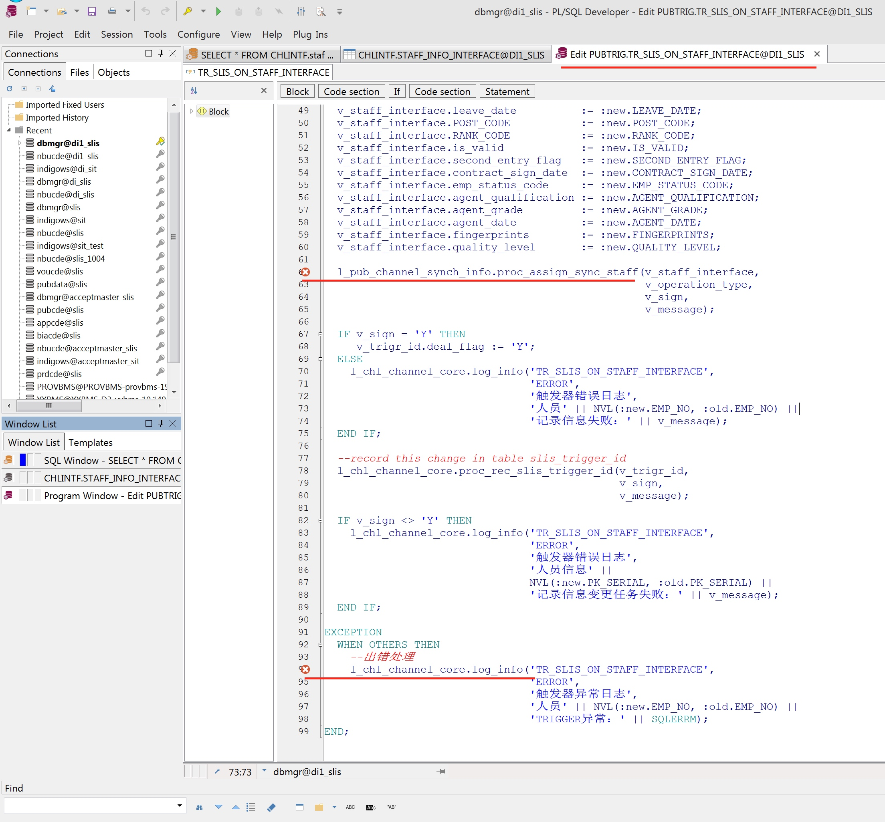
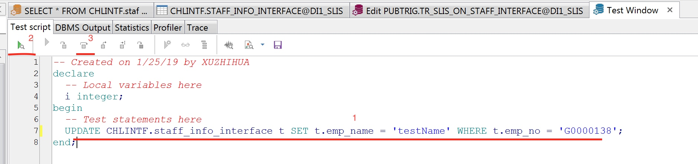
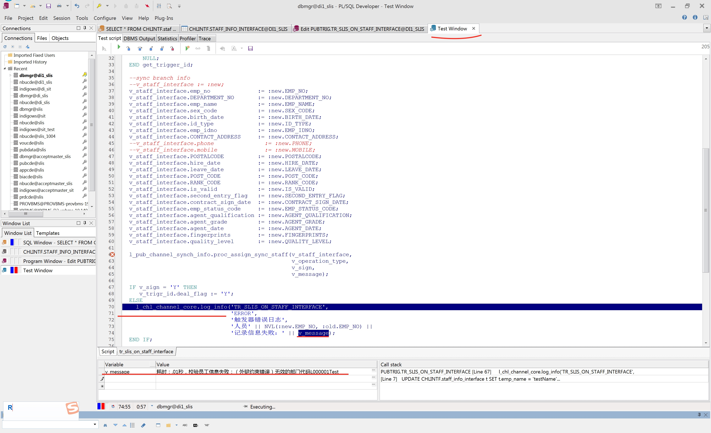

Oracle trigger 调试
在 PLSQL 中 调试 trigger 的代码，检查测试编写的触发器代码是否ok
Oracle trigger 调试
本例子用 dbmgr (数据库管理员) 账号执行下面操作
已知有两个表
CHLINTF.staff_info_interface PUBDATA.staff_info
staff_info中的数据是通过staff_info_interface的触发器 进行 更新、插入 进去的在
SQL Windows界面下，将鼠标放在在staff_info上面，按下ctrl并点击表名，可以查看该表的所有信息，点击trigger面板，显示信息如下图
双击这一行的任意一个地方， 就可以看看到这个触发器的具体代码，如下图

可以看到我在代码中打了两个 调试断点
打开一个
Test Window窗口，在里面添加 下图红线1处代码， 红线2是开始调试，红线3是一步一步执行 test
开始调试，点击下一步、下一步，下一步，进入到 步骤3 中打的断点处，再下一步...可以看到进入
Exception，在变量窗口 填入变量，可以看到此时这个变量的值，如下图，看到了 执行的错误信息
over， 本例子可以用来 检查测试编写的触发器代码是否ok